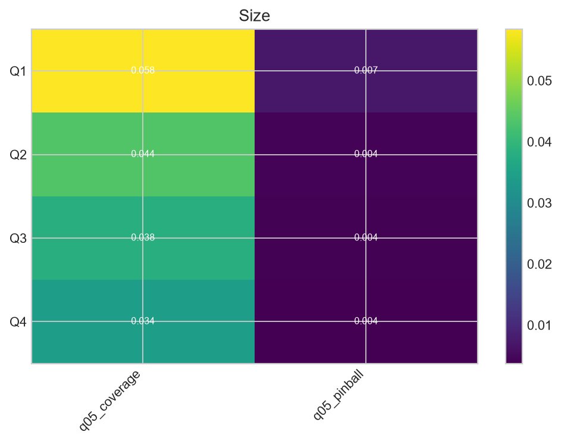

Scientific status: This is a v1.1 diagnostic validation extension. The original v1 locked result is unchanged. Post-hoc findings and pseudo-live recalibration are not new confirmatory holdout results.
Rows stored: 4. The table below is a concise view; complete evidence is in Parquet and the v1.1 DuckDB.
| review_budget | frozen_score_threshold | reviewed_n | reviewed_share | residual_q05_pinball | baseline_q05_pinball | tail_miss_capture | asset_exposure_capture | deposit_exposure_capture | review_efficiency |
|---|---|---|---|---|---|---|---|---|---|
| 0.01 | 0.973699 | 120 | 0.00398843 | 0.00410306 | 0.00432311 | 0.0160428 | 0.000471466 | 0.00030169 | 0.05 |
| 0.05 | 0.869845 | 1664 | 0.0553063 | 0.00366545 | 0.00432311 | 0.200535 | 0.087834 | 0.0883031 | 0.0450721 |
| 0.1 | 0.803013 | 3027 | 0.100608 | 0.00352997 | 0.00432311 | 0.294118 | 0.204922 | 0.203085 | 0.0363396 |
| 0.2 | 0.712162 | 5283 | 0.175591 | 0.003361 | 0.00432311 | 0.411765 | 0.280131 | 0.277781 | 0.0291501 |
Rows stored: 6. The table below is a concise view; complete evidence is in Parquet and the v1.1 DuckDB.
| review_budget | n | event_threshold | event_prevalence | spearman_prediction_actual | event_capture | precision | lift | asset_weighted_capture | deposit_weighted_capture |
|---|---|---|---|---|---|---|---|---|---|
| 0.01 | 30087 | -0.0635464 | 0.0362615 | 0.184489 | 0.116407 | 0.423333 | 11.6745 | 0.086976 | 0.0675047 |
| 0.05 | 30087 | -0.0635464 | 0.0362615 | 0.184489 | 0.364803 | 0.264628 | 7.29776 | 0.52687 | 0.515118 |
| 0.1 | 30087 | -0.0635464 | 0.0362615 | 0.184489 | 0.56187 | 0.20379 | 5.62001 | 0.620564 | 0.608134 |
| 0.2 | 30087 | -0.0635464 | 0.0362615 | 0.184489 | 0.737855 | 0.133788 | 3.68952 | 0.670108 | 0.660523 |
| 0.5 | 30087 | -0.0635464 | 0.0362615 | 0.184489 | 0.953254 | 0.0691351 | 1.90657 | 0.781237 | 0.772688 |
| 1 | 30087 | -0.0635464 | 0.0362615 | 0.184489 | 1 | 0.0362615 | 1 | 1 | 1 |
